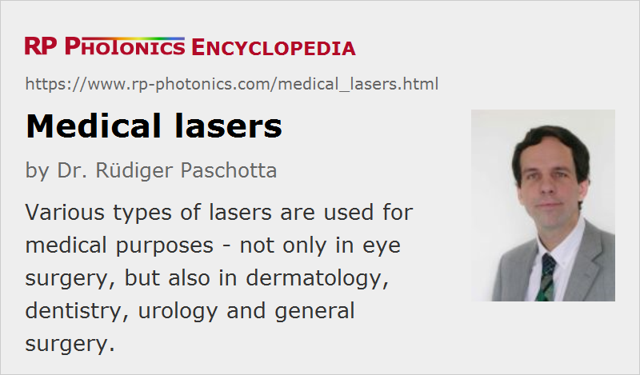

Medical Lasers
Definition: laser systems used for medical applications
More general terms: lasers
German: medizinische Laser, Medizinlaser
How to cite the article; suggest additional literature
Author: Dr. Rüdiger Paschotta
There are various kinds of lasers which are applied for medical purposes. In most cases, they essentially do a kind of laser material processing, just on biological materials. In a few cases, laser light is used in other ways, for example for triggering photochemical reactions.
Lasers are not only used for medical therapies, but also for diagnostic purposes and for medical research. For example, there are methods of ocular imaging with optical coherence tomography (which may involve wavelength-swept lasers), laser microscopy and laser spectroscopy, which all can be useful for planning treatments. Optogenetics is another important field in medical research which profits from laser technology.
Besides lasers, medical laser system may contain various other kinds of photonics and optics technology, e.g. frequency converters, photodetectors for monitoring purposes, cameras, and beam delivery systems.
Generally, medical laser systems need to fulfill relatively strict conditions. In particular, they need to be highly reliable, since a failure during a medical operation may have serious consequences. Their performance parameters must be well reproducible and precisely monitored during operation. Various legal conditions (e.g. fulfilling certain standards), which can substantially vary between countries, must be fulfilled before such lasers can be applied.
The following sections describe some typical applications of medical lasers. Note, however, that the article cannot completely cover the huge field of medical applications, with many new applications being under development.
Lasers in Ophthalmology
Ophthalmology, i.e., the branch of medicine and surgery dealing with the diagnosis and treatment of problems of the eye, is a classical field of medical laser applications. This is essentially because the eye, including essential inner parts like the retina (the light-sensitive region), is well accessible by light, while other approaches e.g. to the retina are difficult.
Vision Correction
A particularly important field is vision correction, because this affects so many people. Essentially, an eye often has an inappropriate value of the dioptric power of its lens, which is outside the range of accommodation. One form is myopia (short-sightedness or near-sightedness), where the dioptric power is too high for forming sharp images of distant objects, but more appropriate for nearby objects. The opposite is hyperopia (far-sightedness), where the dioptric power is too small. Also, there can be problems with astigmatism, i.e., with different dioptric power in the vertical and horizontal direction. Without other treatment, patients then require appropriate correcting glasses. With certain types of refractive surgery, including methods of laser surgery, the dioptric power can be modified – not by affecting the lens, but by changing the shape of the cornea (the outer part of the eye).
An early method, applied already in 1987, is photorefractive keratectomy (PRK). Here, an excimer laser was used to reshape the cornea; the emitted ultraviolet light exhibits strong absorption in the tissue, so that it affects only the outermost layer. The top layer (called corneal epithelium) was completely lost in this process and had to be re-created during the healing process, which took several days and involved an increased risk of infections.
An improved and well established method is LASIK. Here, one first uses mechanical means (a microkeratome) to produce a flap, i.e., to cut out a thin layer from the cornea, leaving only a small bridge at one side. The flap can then be folded away. Thereafter, with an excimer laser one can do the remodeling (reshaping) of the cornea. Afterwards, the flap is returned to its original position, where it can connect with the lower lying tissue again within a few days.
A further improved method for laser vision correction is called femtosecond LASIK. In contrast to traditional LASIK, the flap is generated by applying a fast sequence of thousands of tightly focused ultrashort laser pulses to points slightly below the surface of the cornea. The used laser may be a mode-locked fiber laser in conjunction with a fiber amplifier system. Thereafter, the same procedure is applied as in traditional LASIK.
With such laser surgery methods, it is possible to correct particularly myopia (even quite strong forms), but also hyperopia and astigmatism. A possible challenge is that it is not perfectly predictable how the dioptric power will change with time after the operation.
Treating Retinal Detachment
Lasers can also be used to treat retinal detachment – a condition where the retina could be completely detached, leading to blindness. With laser pulses sent to spots on the retina around the retinal tear, which may not be essential for seeing, one can cause photocoagulation and thus prevent further detachment.
Lasers in Dermatology
The skin is also a particularly accessible part for laser radiation, and various laser treatment methods have been developed for treatment of different skin conditions. For example, vascular and pigmented lesions can be treated, also scars and wrinkles. Further, lasers are frequently applied for the removal of tattoos and for hair removal.
In photodynamic therapy, some photosensitizer substance is injected into the blood stream and is locally activated through laser irradiation such that it becomes toxic, inducing cell death. Such methods can be used for treating not only skin cancer, but also prostate cancer, various infections and acne.
In dermatology, one frequently uses Q-switched lasers at various wavelengths, sometimes in conjunction with frequency doubling, but in other cases quasi-continuous-wave operation or continuous-wave operation are needed.
For some treatments e.g. of skin lesions, it is important to operate inappropriate wavelength regions where haemoglobin exhibits strong absorption. For such reasons, a wide range of different laser lines are used – for example:
- 532 nm from frequency-doubled YAG lasers
- 568 nm from krypton ion lasers
- 694 nm from ruby lasers
- 755 nm from alexandrite lasers
- 1064 nm from Nd:YAG
- 2.94 μm from Er:YAG lasers
- 10.6 μm from pulsed or continuous-wave CO2 lasers
Lasers in Dentistry
A common application is the preparation of cavities in the context of curing caries. This can be done with short pulses from a Q-switched Er:YAG laser. Compared with conventional drilling, this procedure may incur less pain.
There are various other laser applications in dentistry, which concern either the hard tissue (teeth) or soft tissues, e.g. for exposing unerupted or partially erupted teeth.
Lasers in Urology
A popular method is the treatment of benign prostatic hyperplasia, which causes problems for many men. There are endoscopes containing optical fibers which allow minimally invasive operations, where high power laser light e.g. from laser diodes is used to ablate tissues. Compared with open operations, there are reduced risks of complications, and the recovery of the patient is quicker.
Laser lithotripsy has been developed for removing stones in the urinary tract. Different microscopic mechanisms can be used for destructing stones with intense laser pulses, such that the remaining small pieces can be easily washed out of the urinary tract. One mostly uses Q-switched holmium lasers emitting around 2.1 μm, a spectral region with good absorption in water. However, it is currently investigated whether the use of thulium fiber lasers could be advantageous due to advantages like a better beam quality and higher pulse repetition rates. The method appears to be a good alternative to extracorporeal shockwave lithotripsy with ultrasound waves.
Lasers are also used for treating urothelial tumors, prostate cancer, urolithiasis and urinary tract strictures, for example.
General Laser Surgery
Lasers may also be used in other kinds of surgery for cutting (laser scalpel), ablating or cauterizing tissues. A wide range of laser types can in principle be used, including CO2 lasers, diode lasers, fiber lasers, gas lasers and excimer lasers. Both continuous-wave operation and pulsed operation can be useful.
Typical advantages of laser surgery are that the affected tissue are automatically sterile, and the tendency for bleeding is reduced through the effect of photocoagulation. However, there may also be disadvantages, such as a lack of haptic feedback and a low processing speed. In some cases, lasers need to be developed e.g. with increased pulse repetition rates for faster processing.
Suppliers
The RP Photonics Buyer's Guide contains 36 suppliers for medical lasers. Among them:
Questions and Comments from Users
Here you can submit questions and comments. As far as they get accepted by the author, they will appear above this paragraph together with the author’s answer. The author will decide on acceptance based on certain criteria. Essentially, the issue must be of sufficiently broad interest.
Please do not enter personal data here; we would otherwise delete it soon. (See also our privacy declaration.) If you wish to receive personal feedback or consultancy from the author, please contact him e.g. via e-mail.
By submitting the information, you give your consent to the potential publication of your inputs on our website according to our rules. (If you later retract your consent, we will delete those inputs.) As your inputs are first reviewed by the author, they may be published with some delay.
See also: lasers, laser applications
and other articles in the category lasers
|  |
If you like this page, please share the link with your friends and colleagues, e.g. via social media:
These sharing buttons are implemented in a privacy-friendly way!